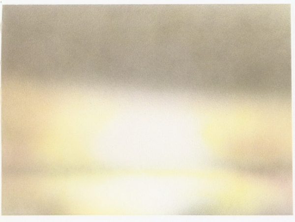
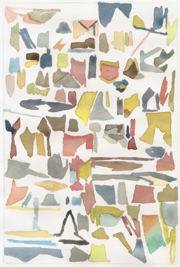
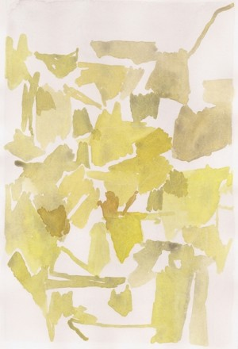
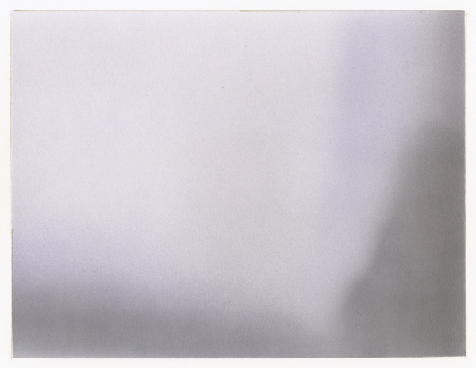
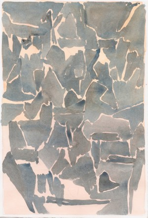
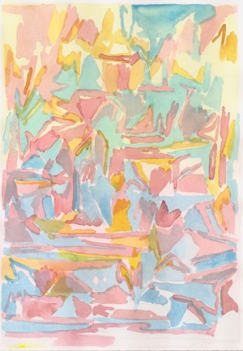

-
Without Anxiety: Interview with Roger White
by Idiom October 29, 2010
Roger White is a painter, a writer, and the co-founder of the journal Paper Monument. His second solo show for Rachel Uffner opens tonight on the Lower East Side. Elsewhere, his work has been seen in shows at Mitchell-Innes & Nash, Foxy Production, and at Kathryn Brennan in Los Angeles, and will be in an upcoming exhibition with Dushan Petrovich at The Suburban in Chicago. Paper Monument recently published I like your work: art and etiquette, a collection of reports on art’s contemporary manners. It’s excellent. Stephen Squibb got beers with Roger, online and off, to discuss the evolution of his work, the current scoring system for panel discussions, and who is more doomed, painters or writers.
Idiom: So you are opening your second solo show at Rachel Uffner this week, one that manages to both broaden and deepen your interest in patterns and abstraction. Can you speak a little about how your work has evolved or changed since your last show in 2008?
Roger White: In the first show, the paintings stuck pretty close to their source material: patterns were borrowed with minimal adaptation, objects depicted in a naturalistic way, and so on. With the more recent work, there’s a greater distance between the referent and the image– to the extent, sometimes, that they’re functionally non-objective paintings. But I still think of them as pictorial.
Idiom: With this greater distance, does your approach to the referent change? Do you find yourself looking at objects and everyday life in a different way? Or is it the other way around – does the increased distance reflect a change that came about on its own?
RW: I tend to look at something and wonder what it would look like painted. And I’ve definitely observed that, as the work changes, I notice different aspects of things. I think that when an art practice is running smoothly, you can get into a nice reciprocity between seeing things differently and making different things, where it’s hard to say what’s affecting what. But it’s by no means a natural or unconscious process: there’s a lot of striving, plotting, and worrying.
Idiom: Do you have favorite plots or worries that return repeatedly?
RW: Nothing beyond the usual concerns of the contemporary artist.
Idiom: I was thinking on a more formal level – compositional plotting, image worries – but I’m always curious how the quotidian concerns of everyday living show up in an artistic process. Can you speak about how patterns figure into your work?
RW: Pattern implies both a repeating motif and a plan. You can sew a shirt following a pattern, using patterned fabric. In the paintings in my first show, there was an overlap between the two senses of the word: repetitive designs made using a template.
The recent paintings are based on several different drawings, functioning as patterns in the first sense of the word. But the important aspect for me is that they’re vague and interpretable in a lot of different ways: ie. they’re intentionally not very effective as patterns. Most of them are based on observational notes, beginnings of sketches of objects or spaces. That connection to representation is important to me. I do a series of watercolors from these, going back and adjusting the drawings, until I feel like there’s enough there to start a painting, but not enough for me to know what it will end up looking like.
My grandmother is a quiltmaker, and that was a big influence on early visual thinking. But I also think pattern and the decorative arts provide a good counter-model for abstract painting to the one we’re familiar with in ‘high’ art: endless appropriation and adaptation without anxiety.
Idiom: That’s fascinating. Can you speak more about this contrast? Is it that there is an anxiety at work in the decorative arts? Or is it that appropriation and adaptation are expected in that field to the point that the question of anxiety is moot?
RW: This is probably, a grass-is-greener phenomenon for the most part. I’m sure people who design textiles, for example, are as panic-stricken as people who paint abstract paintings. But I like to think they’re at least free from the teleological problem, or the death of painting problem, which we all seem to be morbidly attached to, still, after all these years.
Idiom: Agreed. It would be nice to read just once about the death of paisley, the crisis of plaid… Why do you suppose this attachment persists? Standing at a distance, painting seems very much alive, certainly in the material sense of the marketplace, so its death must always have been discursive, perhaps. And this death is still with us. still immanent, somehow. Is this just the disconnect between what is sold and what is talked about? Or is there something else at work?
RW: I don’t know, but oddly I keep thinking about it in relation to the vanitas theme in Dutch Golden Age painting. Still lives were at the bottom of the hierarchical genre pile. They sold, but were they as meaningful as the portraits, the history paintings? So a little bit of death went a long way towards elevating those domestic scenes, and legitimizing the pleasure the viewer could take in admiring the fruit, the lobsters, the gleaming silver. Similarly there’s a sort of conceptual solidity – and maybe moralism? – in constantly evoking the specter of The End.
Idiom: As both a painter and writer/editor, is the fatalism that characterizes both fields similar or distinct? Are there two kinds of death at work here?
RW: In both cases, the field of possibilities is enormous. There is so much material, there are so many producers, everything seems to be permitted, and it’s difficult to know which way to go—or if any way is better than any other. Retrieving that history (however much of a bummer it is) is one way to deal with the expanding multiverse of contemporary art production. It seems to offer the promise of a slightly longer duration for one’s works of art or ideas.
Idiom: How do you see these fields relating in your own practice?
RW: I’ve kept them pretty separate. The writing isn’t art, and I don’t want it to be polemical either. Conversely the paintings are in no way literary. I may eventually change my mind about this.
Idiom: Did one or the other come first?
RW: Painting came first, writing followed. It’s good to get out of the studio occasionally.
Idiom: Talk a little about Paper Monument. How’d it come about? What’s the experience been like?
RW: My friend Dushko Petrovich and I had been writing about art for a couple of years, in various venues, and in a moment of enthusiasm we decided to do an art journal. The idea was simple: writing about art that was accessible to a broad audience without sacrificing intellectual rigor, that reflected critically on the real-world support systems of contemporary art. Easier said than done, but we’ve been extremely fortunate to have collaborated with lots of very talented people in realizing the project. We’re going to do a book about art school assignments next.
Idiom: It’s an excellent publication. What stands out to me about it, almost by default, is how funny it is. The phrase ‘neo-classical like a rapist’ remains a recent favorite. Also “How Artists Must Dress” utilizes humor to address something that is everywhere considered but never spoken. Is this a conscious strategy? Why is the artworld so relentlessly humorless?
RW: It is a pretty serious place isn’t it? At least in discourse. The humor came more from temperament than strategy, or maybe the market for sober, reverential, critical prose had been cornered and we just found the only open space in the field. I’m glad you think it’s funny; it’s hard to tell, sometimes, when we’re putting the issue together.
Idiom: It’s interesting, the way the art épistémè is structured. On the one hand there are all these very clever, professionally insightful people, whose level of self-reflexivity is almost debilitating and yet, on the other, there is this absolute commitment to the coincidence of the work and its textual representation – which leaves little room for literary vitality. It would be touching, almost, if it wasn’t so tiresome. As someone who is typically such a partisan for seriousness it places me in an odd position; advocating for levity. Tell me about your recent publication, on art and etiquette.
RW: I like your work: art and etiquette came out of the observation that, amongst the group, we spent a lot of time analyzing the social idiosyncrasies of the art world. In fact, most everyone we knew in the artworld did so as well. And at the same time there was a sort of furtive quality to having these discussions. No one quite wanted to admit having any of the social anxieties so clearly manifested in the rituals of art openings, studio visits, so on. So we figured we’d get the discussion rolling by asking a few brave people to go on record with their impressions. My one regret for the publication was that nobody addressed the topic of panel discussions, at which I have witnessed some of the worst breaches of etiquette in the art world or any world.
Idiom: They can be like car crash theater, panel discussions. I can’t decide why this is so. Is it the appearance of a certain honesty? It often seems that the opposite is the case, that people are going out of their way to enact a certain idea of difficulty or abrasiveness which must have some currency.
RW: Well it seems that someone always wants to *win* the panel. Almost as though it doesn’t matter what is said so long as you are adamant and remembered. I often feel so unfulfilled after the fact, and wish the discussion could go on longer, yet I’m always also very fatigued by the whole thing. Maybe we’re just in an ultra-sensitive age, but it’s hard to watch people get dismantled, taken down, for art.
Idiom: Exactly, and this sort of hostility or aggressiveness is often absent where it would seem more at home, on political panels, say, or in other more obviously antagonistic fields.
RW: Maybe the solution is to have more micro panels with tighter focuses, like, a conversation between three short form critics, or three performance artists who decline to show in galleries.
Idiom: And the next book is about art school assignments?
RW: Yes, Dushko had the elegant idea of responding to the widespread, enduring, sometimes suffocating critical reflection on art pedagogy in a simple, practical way: by compiling a useful sourcebook for actual art pedagogues. It’s been remarked that in art education, assignments are the first thing you leave behind as you get serious about becoming an artist. Yet they are the first thing you encounter in terms of your initial socialization, professionalization, in the field. Draw 10 self portraits by Monday, that sort of thing. Our plan is to have people submit their most memorable assignments, especially people who were in art school forty years ago, and who represent a cross section of teachers and students. Hopefully, it will be out next year.
Idiom: So the show is installed, you open tomorrow, are you happy with it?
RW: Well I’m such a perfectionist about painting that I can’t really be objective about the work until well after the fact. But I’m optimistic that in five years I’ll look back and be happy with it.